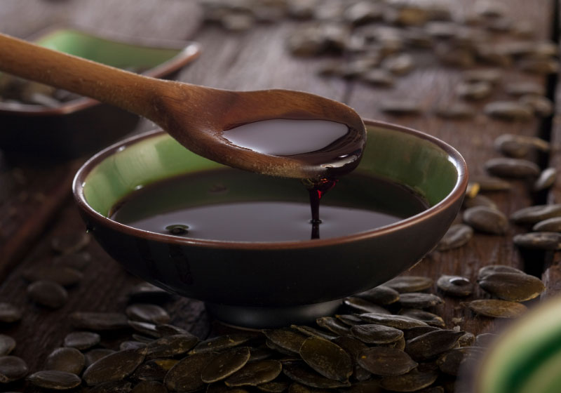
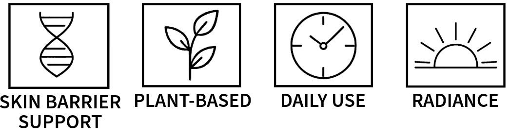

Pumpkin Seed Oil
Cold-Pressed SeedsFloods skin with omega fatty acids to cushion, strengthen, and moisturize.
✓ Replenishing ✓ Conditioning$49.00
Deep replenishing blend of nutrient-rich oils and botanical extracts designed to comfort, restore, and enhance skin radiance.
Skin Type: Ideal for all skin types, especially dry, and those needing daily moisture and nourishment. Suitable for morning and evening use.
Tayos is a deep replenishing facial oil that delivers comfort and restoration with every application. This nutrient-rich blend combines powerful botanical extracts with nourishing oils to enhance your skin's natural radiance. Perfect for those seeking daily moisture and intensive nourishment.
Apply 3–5 drops to clean, damp skin. Gently press into the face and neck. Use morning and night for best results.
Cucurbita Pepo (Pumpkin) Seed Oil, Camellia Oleifera Seed Oil, Butyrospermum Parkii (Shea) Oil, Oryza Sativa (Rice) Bran Oil, Simmondsia Chinensis (Jojoba) Seed Oil, Callitris Intratropica (Blue Cypress) Wood Oil, Tocopherol (Vitamin E), Daucus Carota Sativa (Carrot) Root Extract, Kunzea Ambigua Leaf Oil, Eremophila Mitchellii (Buddha) Wood Oil, Glycine Soja (Soybean) Oil, Limonene, Geraniol, Pinene.
A nutrient-dense cocktail of cold-pressed oils, rare woods, and botanical extracts delivers deep replenishment with every application.
Floods skin with omega fatty acids to cushion, strengthen, and moisturize.
✓ Replenishing ✓ Conditioning
Silky, fast-absorbing oil that softens texture and amps up luminosity.
✓ Silkening ✓ RadianceA nutrient-dense oil that deeply conditions and strengthens the skin’s natural barrier.
✓ Barrier Support ✓ ComfortingBeta-carotene rich extract that supports renewal and youthful radiance.
✓ Revitalizing ✓ Brightening
Deeply moisturizes while its smoky, grounding aroma transforms the ritual.
✓ Moisturizing ✓ Aromatic
Azulene-rich extract that calms irritation and keeps tone even.
✓ Soothing ✓ Toning